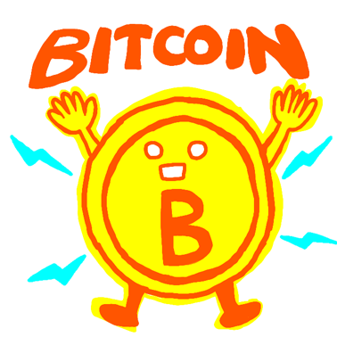

ビットコインとは何でしょうか？
細かいことを抜きにすれば、
①中央の管理者を必要とせずに
②利用者同士で直接決済ができる
③発行上限とスケジュールが決められた
④電子貨幣
です。一旦、以上です！とりあえず、ここまでを覚えてください。
これだけだと、わかったような、わからないような、という感じかもしれませんが、とりあえず、上の四つの特徴があるということを、なんとなく把握してみてください。そして、これから先の詳細な部分は一旦置いておきます。
ここから先というのは、ビットコインとは何か？を掘り下げる内容、たとえばブロックチェーンや、マイニング、ノード、などといった技術的な部分です。それらは魅力的な部分ですが、かなり複雑です。人によっては、そこがハマるポイントだったりもしますが、多くの場合、いきなりそこに突入していくのは、なかなかハードルが高いと思われます。
次に「ビットコインがなぜ重要とされるのか？」という問いです。これは「何か？」とは、また全然違う方向性です。こちらの方は、経済や政治、社会のあり方、といった内容であり、皆さんにとっても、かなり関わりがあるテーマになります。
例えで説明しましょう。 車とは何か？といえば、ざっくりと「人が乗って素早く移動する機械」です。細かく言うと、エンジン、内燃機関、トランスミッションなどの説明になりますが、一旦それは置いておきます。
一方、「車がなぜ社会にとって重要なのか？」という事を説明するとすれば、人々の移動を劇的に早め、産業を発展させ、都市を変え、世界を根本的に変えた、等といったことの説明になるでしょう。
そういったことを知るためには、とりあえず「車とは人が乗って素早く移動する機械」というぐらいを知っておけば、まあ、大丈夫でしょう。
これからビットコインについてお伝えする方法としても、ビットコインの詳細は飛ばして、それがなぜ重要なのか、という点に焦点を当てていきたいと思います。そういうわけでビットコインクイズでありながら、今回以降は、しばらくの間、ビットコインの事はあまりでてきません。
ではもう一度、「なぜビットコインは重要なのか？」をお伝えするための、「ビットコインとは何か？」に関する最低限の基礎を確認です。
改めて、ビットコインとは何でしょうか？
細かいことを抜きにすれば
①中央の管理者を必要とせずに
②利用者同士で直接決済ができる
③発行上限とスケジュールが決められた
④電子貨幣
です。
それぞれもう少しだけ説明しておきます。
ここがちょっとわかりにくいですが、まず逆に「中央の管理者を必要とする」仕組みというのは、多くのものがそうですが、例えばドルや円も、「アメリカ」や「日本」みたいに、集中的に管理する組織があり、中央の管理者が必要な仕組みです。
一方、「中央の管理者を必要としない」仕組みというのは、類似するものをあげると「インターネットそのもの」が挙げられます。インターネットは世界中のたくさんの会社、組織が、国家が、それぞれ参加して全体として作り上げられているもので特定の管理者が、全てを一括、集中的に管理しているものではありません。
google とか amazon とか大きな組織はあっても、インターネットを全体を管理する「インターネット社」というような、中央の管理者は存在しないわけです。
ビットコインも同様で、ビットコインを一括で集中的に管理する「ビットコイン運営会社」みたいなものは存在しません。
これは、金貨を A さんと B さんで直接やり取りするのに近いイメージで、取引できる仕組みということです。 ①の中央の管理者がいない、というのは、銀行のように、間に入って、承認して、間接的に支払う、というような信頼が必要な仲介者もいないということでもあります。もし間の仲介者がくすねたり、利用を禁止したら、金貨は B さんに届きません。そういうことがなく、やり取りできる仕組み、ということです。
例えば金（ゴールド）は、地球上に存在する量が大体わかっています。それが上限です。錬金術はないとされているので、それ以上作り出すことはできません。また金（ゴールド）が、毎年新しく掘り出される量というのも大体決まっていて、それなりに一定です。
ビットコインも発行上限は 2100 万枚固定でそれが上限です。また、まだ全部発行はされていないのですが、今後の発行スケジュールも、プログラムにより正確に決まっており基本的に変えることはできません。
一方、ドルや円は、発行上限は決まってません。また、発行スケジュールも、その時々の経済状況などに応じて国が決めていくことであり、決まっていません。
これはネットを通して使用できる決済システムという事です。ネット上のものなので、メールのように、ネット上で使用するのが基本となります。
ただし、①で述べたように中央の管理者はおらず、gmail における google 社のような存在はありません。 また、②で述べたように、途中で間の誰かにくすねられる、利用を止められる、というような事もありえません。
以上です。ビットコインとは何か？ということについて、なんとなくのイメージができたでしょうか。
※中央の管理者がいないのに、どうやって仕組みが維持できるんだ？銀行のような信頼できる仲介者なく、やり取りするって、どういうことだ？などなど色々な疑問がわくでしょうが、その辺は最初に述べた、技術的な説明になります。この部分こそが、サトシ・ナカモトが考案した非常に画期的な仕組みなのですが、そこは難しい技術の話になるので、当面は割愛します。ご興味がある方は、下記、ホワイトペーパーを読んでみてください。
※ひとつだけ誤解をといておくと、メールで例えましたが、実際にはビットコインは、送ったり、受け取ったりというものとはちょっと違います。公開型の分散台帳に所有の書き換えを記録していく、という感じの仕組みなのですが、そこはやはり技術的なところで、詳細が気になる方は、下記のホワイトペーパーをご参照ください。
https://bitcoin.org/files/bitcoin-paper/bitcoin_jp.pdf
では、前提となる「ビットコインとは何か？」についての説明はここまでとして、次回以降は、当分の間、「ビットコインがなぜ重要なのか？」をお伝えしていく内容となります。それは、ビットコイン前知識、とでもいう内容で、ビットコインの話はあまりでてきません。経済や社会の話が中心になります。
詳しくは次回以降ですが、この段階で皆さんは「ビットコインがなぜ重要なのか？」という問いの答えが何か思い当たるでしょうか？
例えば、PayPay や楽天 Pay、Suica といった電子通貨がありますし、クレジットカードや銀行を通じた国際送金ネットワークも存在します。これらの既存のシステムに、ビットコインが加わったことで何か意味があるのでしょうか？
めちゃくちゃ意味があります！少なくとも、私を含め、ビットコインを信奉している人々は、そのように考えています。
ビットコインの普及は、経済や政治、社会全体を根本的に変革する可能性があります。それこそ、車が世界を大きく作り替えたように、世界史の方向性に影響を与えるような、壮大な力を秘めているのです。
等というと、アホみたいに大げさな感じがしますね（笑）。 実際、そこまでの変化が起きるかは分かりませんが、ビットコインは一部の人々にとっては、現在進行形の、壮大な夢物語と捉えることができるのです。
上に挙げた、たった四つの特徴のものから、なぜそんな大げさな話が出てくるのでしょうか？これからのクイズやコラムを通じて、それを解き明かしていきたいと思います。
思うように伝えられるかわかりませんが、ビットコインがこの先も大きくなっていき、お金儲けだけではなく(それもとても重要！）、歴史の物語として広がる可能性があることを、味わっていただければと思います。